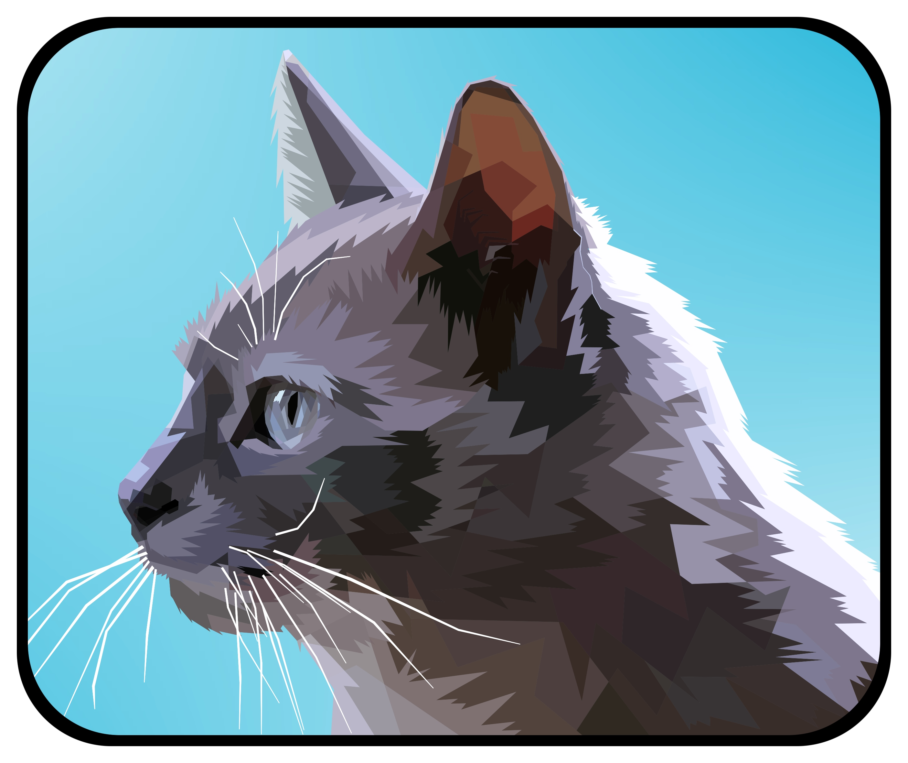

¿Qué es SrodinApp?
SrödinApp es una red social la cual está enfocada en la calidad de la información que puede obtener el usuario, bajo un entorno académico donde el usuario pueda desarrollar distintas habilidades que le sirvan para la vida. Partiendo de un ambiente enfocado en el aprendizaje autónomo, en el cual su principal motor sea no solo la competencia entre usuarios, sino su colaboración y la unión de saberes para alcanzar el objetivo principal de la red social, siendo esta el aprendizaje.
El logo que utilizara la red social sería el siguiente:
